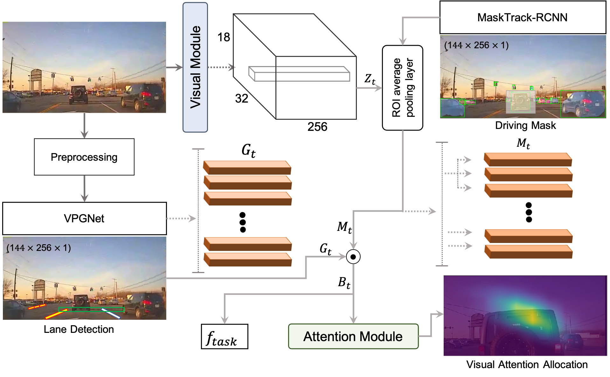

MEDIRL is a framework for modeling the visual attention allocation of drivers in imminent rear-end collisions. MEDIRL is composed of visual, driving, and attention modules. Given a front-view driving video and corresponding eye fixations from humans, the visual and driving modules extract generic and driving-specific visual features, respectively. Finally, the attention module learns the intrinsic task-sensitive reward functions induced by eye fixation policies recorded from attentive drivers. MEDIRL uses the learned policies to predict visual attention allocation of drivers. We also introduce EyeCar, a new driver visual attention dataset during accident-prone situations. We conduct comprehensive experiments and show that MEDIRL outperforms previous state-of-the-art methods on driving task-related visual attention allocation on the following large-scale driving attention benchmark datasets: DR(eye)VE, BDD-A, and DADA-2000.
Project Overview
EyeCar Dataset: We select 21 front-view videos that were captured in various traffic, weather, and day light conditions. Each video is 30sec in length and contains typical driving tasks~(e.g., lane-keeping, merging-in, and braking) ending to rear-end collisions. Note that all the conditions were counterbalanced among all the participants. Moreover, EyeCar provides information about the speed and GPS of the ego-vehicle~(see Table~\ref{tbl:data-recap}). In addition, each video frame comprises 4.6 vehicles on average, making EyeCar driving scenes more complex than other visual attention datasets. The EyeCar dataset contains 3.5h of gaze behavior (aggregated and raw) from the 20 participants, as well as more than 315,000 rear-end collisions video frames. In EyeCar dataset, we account for the sequence of eye fixations, and thus we emphasize on attention shift to the salient regions in a complex driving scene. EyeCar also provides a rich set of annotations(e.g., scene tagging, object bounding, lane marking, etc.). Compared to prior datasets, EyeCar is the only dataset captured from a point-of-view~(POV) perspective, involving collisions, and including metadata for both speedand GPS. EyeCar also has the largest average number of vehicles per scene, and gaze data for 20 participants.

MEDIRL - Module 1. The visual module: The visual module extracts low and mid-level visual cues that are useful for a variety of visual attention tasks. We rely on pre-existing models for semantic and instance segmentation, as well as depth estimation. In addition, we propose an approach to detect brake lights and traffic lights.

MEDIRL - Module 2. The driving module: The driving module extracts driving-specific visual features for driving tasks.

MEDIRL - Module 3. The attention module: Drivers pay attention to the task-related regions of the scene to filter out irrelevant information and ultimately make optimal decisions. Drivers do this with a sequence of eye fixations. To learn this process in various driving tasks ending in rear-end collisions, we cast it as a maximum inverse reinforcement learning approach.

Team
 Laura Barnes
Laura Barnes
Citation
@inproceedings{baee2019eyecar,
title={EyeCar: Modeling the Visual Attention Allocation of Drivers in Semi-Autonomous Vehicles},
author={Baee, Sonia and Pakdamanian, Erfan and Roman, Vicente Ordonez and Kim, Inki and Feng, Lu and Barnes, Laura},
booktitle={arXiv preprint arXiv:1912.07773},
year={2019}
}